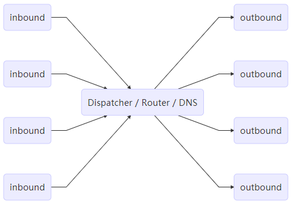

通过 VPS 以及 V2Ray 让奇怪的知识增加！
硬件：VPS
首先，笔者选择了一台海外的 VPS 服务商 Vultr，主要原因如下：
- 牌子比较大，不用担心跑路问题。
- 新人注册优惠（不定期，注册赠送若干刀，但有使用期限，到期清除）。
- 海外免除备案。
- 支持支付宝、微信支付，对国内用户比较方便。
- 按时收费，意味着随时可以销毁服务器，更换套餐。
如果不考虑海外因素的话，对于学生党来说阿里云和腾讯云每月 10 元的学生优惠服务器将是首选。
软件：Project V (V2Ray)
V2Ray 是 Project V 下的一个工具。Project V 是一个包含一系列构建特定网络环境工具的项目，而 V2Ray 属于最核心的一个。 官方中介绍Project V 提供了单一的内核和多种界面操作方式。内核（V2Ray）用于实际的网络交互、路由等针对网络数据的处理，而外围的用户界面程序提供了方便直接的操作流程。不过从时间上来说，先有 V2Ray 才有 Project V。 如果还是不理解，那么简单地说，V2Ray 是一个与 Shadowsocks 类似的代理软件，可以用来科学上网学习国外先进科学技术。
以下是用户可以参考的资源：
本文为笔者对于以上官网教程的重点记录。如果有条件，请直接阅读上述教程。
安装
从软件上 V2Ray 不区分服务器版和客户端版，也就是说在服务器和客户端运行的 V2Ray 是同一个软件，区别只是配置文件的不同。因此，通常情况下配置为：
- 服务器为 Linux VPS
- 客户端形式很多（例如 PC、手机、路由器、网关等），基本可以归结为以下几种：
- Windows PC （笔者的情况，）
- Linux (同服务器)
- macOS (同服务器)
- iOS (APP Store下载)
- Android (Github 或者 Google Play Store下载)
服务器安装
首先进行时间校准，对于 VPS (Linux) 可以执行命令 date -R 查看时间
1 | rm -rf /etc/localtime |
在 Linux 操作系统， V2Ray 的安装有脚本安装、手动安装、编译安装 3 种方式，请使用官方提供的脚本安装，大佬随意。该脚本由 V2Ray 官方提供。该脚本仅可以在 Debian 系列或者支持 Systemd 的 Linux 操作系统使用。
1 | bash <(curl -L -s https://install.direct/go.sh) # 使用脚本一步安装（使用 curl） |
服务器端安装完毕后会生成配置文件 /etc/v2ray/config.json，默认的配置已经保证可用，可以根据需求决定是否更改。如果需要更新 V2Ray，重新安装即可。在更新过程中会自动重启 V2Ray，但配置文件保持不变。
安装脚本也可以使用 wget 完成：
1 | wget https://install.direct/go.sh |
确保防火墙相应端口打开
该一键脚本不会自动配置防护墙，这也是根据不同的 VPS 所不同，有的可以开启响应端口，有的不行，所以出现上述问题应该马上检测防火墙中响应的端口是否开启，例如所设置端口为 1000，那么使用下面的命令开启端口：
1 | firewall-cmd --zone=public --add-port=1000/tcp --permanent |
客户端安装
点这里下载 V2Ray 的 Windows 压缩包:
- 如果是 32 位系统，下载 v2ray-windows-32.zip
- 如果是 64 位系统，下载 v2ray-windows-64.zip
下载速度慢或无法下载请考虑挂已有的翻墙软件来下载，下载并且解压之后会有下面这些文件：
- v2ray.exe 运行 V2Ray 的程序文件
- wv2ray.exe 同 v2ray.exe，区别在于wv2ray.exe是后台运行的，不像 v2ray.exe 会有类似于 cmd 控制台的窗口。运行 V2Ray 时从 v2ray.exe 和 wv2ray.exe 中任选一个即可
- config.json V2Ray 的配置文件，后面我们对 V2Ray 进行配置其实就是修改这个文件
- v2ctl.exe V2Ray 的工具，有多种功能，除特殊用途外，一般由 v2ray.exe 来调用，用户不用太关心
- geosite.dat 用于路由的域名文件
- geoip.dat 用于路由的 IP 文件
- 其他
实际上双击 v2ray.exe （或wv2ray.exe） 就可以运行 V2Ray 了，V2Ray 会读取 config.json 中的配置与服务器连接。
也可以选择拥有 GUI 的第三方客户端。同时，由于通常情况下我们使用浏览器上网，因此还需要一个为浏览器设置代理。综上，笔者的客户端环境为：
- 客户端：V2RayN (Windows)
- 浏览器：Google Chrome
- SOCKS 代理插件：SwitchyOmega
如果是 Linux 或 macOS 的系统，其安装方式同服务器端一模一样，只是配置文件不同。
工作原理
其实各种科学上网的原理都是隧道，通过加密中转完成的，只不过手段不同，V2Ray 也不例外。
V2Ray 没有使用常规代理软件的 C/S（即客户端/服务器）结构，它既可以当做服务器也可以作为客户端，V2Ray 使用 inbound (传入) 和 outbound (传出) 的结构，这样的结构非常清晰地体现了数据包的流动方向，同时也使得 V2Ray 功能强大复杂的同时而不混乱，清晰明了。

- 需要配置至少一个入站协议（Inbound）和一个出站协议（Outbound）才可以正常工作。
- 入站协议负责与客户端（如浏览器）通信：
- 入站协议通常可以配置用户认证，如 ID 和密码等；
- 入站协议收到数据之后，会交给分发器（Dispatcher）进行分发；
- 出站协议负责将数据发给服务器，如另一台主机上的 V2Ray。
- 入站协议负责与客户端（如浏览器）通信：
- 当有多个出站协议时，可以配置路由（Routing）来指定某一类流量由某一个出站协议发出。
- 路由会在必要时查询 DNS 以获取更多信息来进行判断。
在这样的架构中，可以认为每一个 V2Ray 都是一个节点，inbound 是关于如何与上一个节点连接的配置，outbound 是关于如何与下一个节点连接的配置。对于第一个节点，inbound 与浏览器连接；对于最后一个节点，outbound与目标网站连接。以这样的角度理解的话：
- V2Ray 做客户端时，作为第一个节点，inbound 与浏览器链接，接收来自浏览器数据，由 outbound 发出去下一个节点 (通常是发到 V2Ray 服务器)；
- V2Ray 做服务器时，作为第二个节点，inbound 接收来自 V2Ray 客户端（上一个节点）的数据，outbound 与目标网站连接，因此数据由 outbound 发出去(通常是如 Google 等想要访问的目标网站)。
综上所述，数据包的转发主要经过四部分：浏览器（含插件）、V2Ray 客户端、V2Ray 服务端、目标网站。其流程架构图如下所示：

配置文件
V2Ray 的配置文件为 JSON 格式，JSON，全称 JavaScript Object Notation，简而言之是 Javascript 中的对象（Object）。一个 JSON 文件包含一个完整的对象，以大括号“{”开头，大括号“}”结束。
一个 JSON 对象包含一系列的键值对（Key-Value Pair），一个键是一个字符串（String），而值有多种类型，常见的有字符串（String）、数字（Number）、布尔（Bool）、数组（Array）和对象（Object）。
1 | { |
文件格式
V2Ray 的配置文件形式如下，客户端和服务器通用一种形式，只是实际的配置不一样。
1 | { |
| 配置项 | 含义 |
|---|---|
| log: LogObject | 日志配置，表示 V2Ray 如何输出日志。 |
| api: ApiObject | 内置的远程控置 API，详见远程控制配置。 |
| dns: DnsObject | 内置的 DNS 服务器，若此项不存在，则默认使用本机的 DNS 设置。详见DNS 配置 |
| routing: RoutingObject | 路由配置 |
| policy: PolicyObject | 本地策略可进行一些权限相关的配置，详见本地策略 |
| inbounds: [InboundObject] | 一个数组，每个元素是一个入站连接配置。 |
| outbounds: [OutboundObject] | 一个数组，每个元素是一个出站连接配置。列表中的第一个元素作为主出站协议。当路由匹配不存在或没有匹配成功时，流量由主出站协议发出。 |
| transport: TransportObject | 用于配置 V2Ray 如何与其它服务器建立和使用网络连接。详见底层传输配置 |
| stats: StatsObject | 当此项存在时，开启统计信息。 |
| reverse: ReverseObject | 反向代理配置。 |
其中，主要的配置项为 inbounds 和 outbounds。详细配置项参见 https://www.v2ray.com/chapter_02/
入站项 InboundObject
入站连接用于接收从客户端（浏览器或上一级代理服务器）发来的数据，可用的协议请见协议列表。前四项比较重要，其中 setting 包含了该协议的细节配置项，是主要配置的对象。
1 | { |
出站项 OutboundObject
出站连接用于向远程网站或下一级代理服务器发送数据，可用的协议请见协议列表。前三项比较重要，其中 setting 包含了该协议的细节配置项，是主要配置的对象。
1 | { |
路由 RoutingObject
V2Ray 内建了一个简单的路由功能，可以将入站数据按需求由不同的出站连接发出，以达到按需代理的目的。这一功能的常见用法是分流国内外流量，V2Ray 可以通过内部机制判断不同地区的流量，然后将它们发送到不同的出站代理。
协议格式
V2Ray 支持以下协议：
| 名称 | 类型 | 简述 |
|---|---|---|
| Dokodemo-door | 入站 | Dokodemo door（任意门）可以监听一个本地端口，并把所有进入此端口的数据发送至指定服务器的一个端口，从而达到端口映射的效果。 |
| Blackhole | 出站 | Blackhole（黑洞）会阻碍所有数据的出站，配合路由（Routing）一起使用，可以达到禁止访问某些网站的效果。 |
| Freedom | 出站 | Freedom 是一个出站协议，可以用来向任意网络发送（正常的） TCP 或 UDP 数据。 |
| DNS | 出站 | DNS 是一个出站协议，主要用于拦截和转发 DNS 查询。此出站协议只能接收 DNS 流量，一般不需要配置。 |
| Socks | 入站/出站 | 标准 Socks 协议实现，兼容 Socks 4、Socks 4a 和 Socks 5。 |
| Shadowsocks | 入站/出站 | Shadowsocks 协议，包含入站和出站两部分，兼容大部分其它版本的实现。 |
| VMess | 入站/出站 | VMess 是一个加密传输协议，它分为入站和出站两部分，通常作为 V2Ray 客户端和服务器之间的桥梁。 |
| HTTP | 入站/出站 | 主要用作兼容，一般不用。 |
| MTProto | 入站/出站 | MTProto 是一个 Telegram 专用的代理协议。在 V2Ray 中可使用一组入站出站代理来完成 Telegram 数据的代理任务。 |
Socks
socks 协议没有对传输加密，不适宜经公网中传输。虽然 socks outbound 可以作为对外访问的配置，但 socks outbound 更有意义的用法是在特殊情况下，只能使用socks proxy对外访问内部网络中，作为为其他协议连接代理服务器的前置代理使用。
socks inbound 主要用法是在局域网或本机环境下，为其他程序提供本地服务。
VMess
VMess 协议是由 V2Ray 原创并使用于 V2Ray 的加密传输协议，所有数据使用 TCP 传输。在 V2Ray 上客户端与服务器的通信主要是通过 VMess 协议通信。
VMess 依赖于系统时间，请确保使用 V2Ray 的系统 UTC 时间误差在 90 秒之内，时区无关。在 Linux 系统中可以安装ntp服务来自动同步系统时间。
VMess 协议使用用户ID来提供类似密码的功能。ID 等价于 UUID，是一个 16 字节长的随机数，它的作用相当于一个令牌（Token）。 一个 ID 形如：de305d54-75b4-431b-adb2-eb6b9e546014，几乎完全随机，可以使用任何的 UUID 生成器来生成。用户 ID 需在配置文件中指定。
Shadowsocks
V2Ray 作为一个代理工具集合，集成有 Shadowsocks 模块。用 V2Ray 配置成 Shadowsocks 服务器或者 Shadowsocks 客户端都是可以的，兼容 Shadowsocks-libev, go-shadowsocks2 等基于 Shadowsocks 协议的客户端。
配置与 VMess 大同小异，客户端服务器端都要有入口和出口，只不过是协议 (protocol) 和相关设置 (settings) 不同，不再赘述。
示例
以下提供一个基本且常用的配置思路。
TCP 传输
- 设置入站：socks 协议 + 客户端地址 (127.0.0.1:10808)
- 设置出站：
- proxy：vmess 协议 + vnext 地址 (45.45.45.45:19999) + UUID (eb3dc148-97fb-4946-afac-bfbc304d40b4)
- direct：freedom 协议
- block：blackhole 协议
- 设置路由：
- 局域网以及国内网站流量走 direct
- 广告网站流量走 block
- 其他走 proxy
- 设置入站：
- 协议：protocol (vmess)
- 端口地址：port (19999)
- 用户 ID：UUID (eb3dc148-97fb-4946-afac-bfbc304d40b4)
- 设置出站：
- direct：freedom 协议
- block：blackhole 协议
- 设置路由
- 局域网走 block
- 其他走 freedom
以下是默认配置：
1 | { |
TCP + TLS + WebSocket
- 设置入站：socks 协议 + 客户端地址 (127.0.0.1:10808)
- 设置出站：
- proxy：vmess 协议 + vnext 地址 (domain.me:443) + users (UUID: eb3dc148-97fb-4946-afac-bfbc304d40b4) + tls + ws
- direct：freedom 协议
- block：blackhole 协议
- 设置路由：
- 局域网以及国内网站流量走 direct
- 广告网站流量走 block
- 其他走 proxy
- 设置入站：vmess 协议 + 端口地址 (443) + clients (UUID: eb3dc148-97fb-4946-afac-bfbc304d40b4) + tls (证书＋密钥) + ws
- 设置出站：
- direct：freedom 协议
- block：blackhole 协议
- 设置路由
- 局域网走 block
- 其他走 freedom